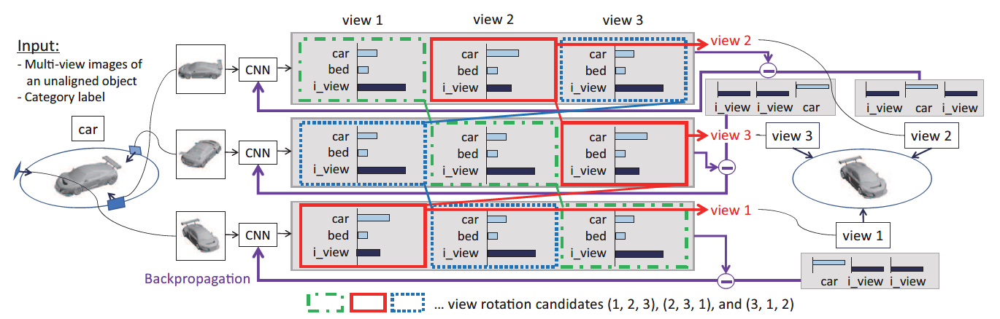
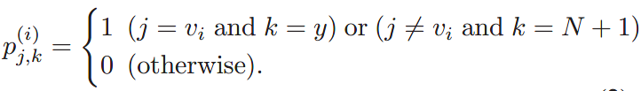

RotationNet: Joint Object Categorization and Pose Estimation Using Multiviews from Unsupervised Viewpoints
严格来说，文中提出的不是一个网络，更像是一种框架，其中的backbone可以随意替换。
本文基于Mutiviews 的3D物体识别，能够识别物体的pose（本文中能够识别物体的viewpoint位置，即假设输入的view num数量为10，网络能够预测出是哪一个viewpoint）
建模过程（自己想的）
首先，我们的问题是，给定的来自于第$i$个视角的图像，我们希望模型能够预测这个图像属于某一个类别$c$的概率：
$$
P(\hat{y}=c| \bf{x},v)
$$
在这里，作者简化了问题，固定视角$v$，即预测该输入图像在此视角下的属于类别$c$的概率：
$$
P(\hat{y}=c|\bf{x}, v=j)
$$
为了实现上面的建模，作者使用了M个Softmax Loss（M表示视角总数），每一个Loss预测此视角下的样本分类概率（即上式）。
但是这样就出现了一个问题：如果样本实际来自于第$i$个视角，那么在第$j$个视角Loss下进行预测，真实的分类应该是哪一个呢？为此，作者添加了一个新的类别，即“不属于此视角类(incorrect view)”，表示若真实图像不是此视角的图像，那么该类的概率应该为1。即理想情况下，应该有 ($x_i$表示样本真实来自于第$i$个视角。$y$表示真实样本的类别)：
$$
P(\hat{y}=y|\bf{x_i},v=i)=1
$$
以及
$$
P(\hat{y}= N+1|\bf{x_i},v\ne i)=1
$$
剩下的概率都为0。
注意：上面$v$表示第$v$视角（个）的Softmax Loss
模型和训练过程

上图中的CNN实际上是一个backbone，对于不同的视角（view），它们是共享权重的；
假设，使用的数据库中，总计有N类样本，每类样本有M个视角（即view_num=M），为了实现对于pose的预测，作者在模型中设置了M个Softmax Loss（对应M个view num），这样，每次输入一张图像，就会得到M个LossVIPLab-Yang/Lab-Notification: Lab Notification (github.com)
- 对于分类来说，作者添加了一类：incorrect view 类，即总计有N+1类，此类表示当前的输入图像，不属于这一类视角的概率，其他N类表示当前图像属于该类样本的概率
- 即，对于第$j$个Softmax Loss的输出，若incorrect view类的概率高，则表示此输入图像不属于第$j$个视角，若其他的分类概率高，则表示此输入图像来自于此视角，且其样本的分类为概率高的那类
- 即理想情况下，这M的Softmax Loss，有M-1个中的incorrect view 类概率最高，剩下的那一个的分类表示样本图像的真实类别。
- 那么输入一张图像之后，在每一个Loss中（共计M个），取最大概率的类别，表示对此输入图像的一种分类，如上图中，view 2，它的3个loss中最大的概率对应类依次是：i_view ( 代表incorrect_view类）, car, i_view。即代表，这个图象并不来自于第1，3个视角，而是来自于第二个视角，并且其所属的类别是car。
- 考虑如下的理想情况下的label，直白点，下面的 $p^{(j)}_{j,k}$ 表示的是第$j$个Loss的输出，$k$表示此Loss对于这张图像的分类预测结果，$k=N+1$表示incorrect view类，$i$表示此图实际来自于第$i$个视图。
- 
- 这里需要注意到，对于任何一个 Softmax Loss，其输出是一个向量vec，len(vec)=类别数（本文中是N+1），对应位置的上的数值表示分到此类的概率，所有位置的值相加为1。
思考
这种能说是无监督的学习到了pose信息吗？而更像是以一种巧妙的方式，添加了一个对pose的监督（即增加一类，并且使用M个Loss表示对应的视角，这样对于各个loss的label实际上也能很容易的得到）
这也算是一种新的添加监督的方式，虽然感觉有点笨重。
这种巧妙的方式值得学习。